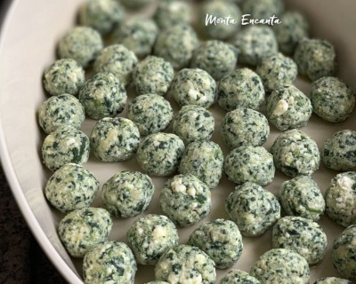

Recheio de Espinafre com Ricota
Menu de receitas

Descrição
Recheio de espinafre com ricota que servirá para preparar diversos tipos de massa.
Lasanha, ravioli, pastel etc.
Ingredientes
- 2 maços de espinafre - preferencialmente com folhas grandes;
- 200g de ricota fresca;
- alho
- 100g queijo gorgonzola
- sal;
Modo de Preparo
- Lave bem as folhas de espinafre - pode manter os talos menores - e seque-as bem.
- Em uma panela, refogue um pouco de alho picado e adicione as folhas de espinafre. Adicione uma pitada de sal e mexa até que as folhas comecem a soltar água.
- Deixe-as cozinhar por alguns minutos, até que estejam ao ponto. Despeje tudo em uma peneira para escorrer a maior quantidade de líquido possível - se possível, coloque algo pesado em cima para que ajude no processo.
- Pique um pouco as folhas.
- Coloque as folhas picadas em um recipiente, acrescente a ricota, o queijo gorgonzola e mexa tudo, até formar uma massa. Experimente o recheio, e se precisar coloque uma pitada de sal.
Menu de receitas